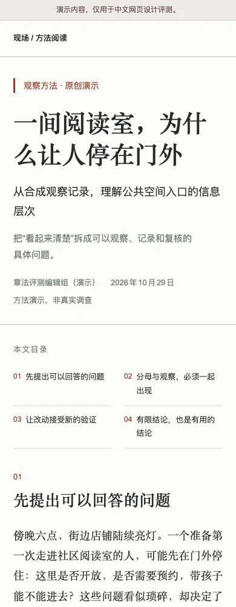
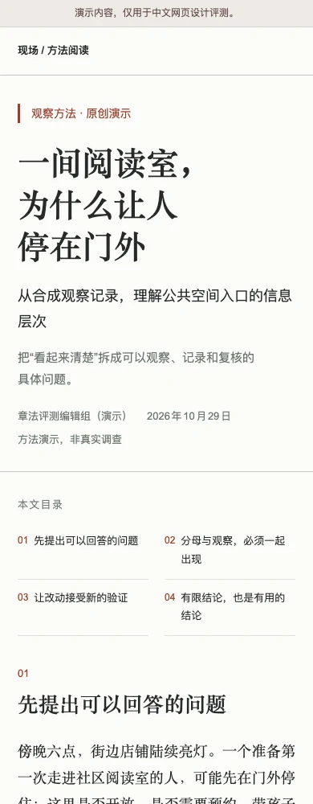

从中文表达出发
中文网页，自有章法。
给 Codex、Claude Code
一套理解中文内容的设计方法。
好看，也值得认真看。从零设计 · 保留功能改版 · 只审不改
同一句中文，读起来可以不一样。


原文未改 · 同页同视口真实截图精选修复示例 / 非生成胜率
给 Codex、Claude Code
一套理解中文内容的设计方法。
好看，也值得认真看。从零设计 · 保留功能改版 · 只审不改


原文未改 · 同页同视口真实截图精选修复示例 / 非生成胜率